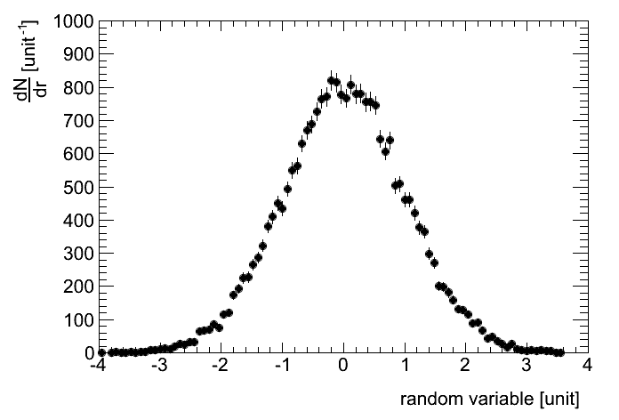

This example demonstrates how to set the plotting style.
Python source code: plot_style.py
import ROOT
import rootpy
rootpy.log.basic_config_colorized()
from rootpy.plotting import Hist
from rootpy.plotting.style import get_style
from rootpy.interactive import wait
atlas_style = get_style('ATLAS')
# Use styles as context managers. The ATLAS style will only apply
# within the following context:
with atlas_style:
hpx = Hist(100, -4, 4, name="hpx", title="This is the px distribution")
# generate some random data
ROOT.gRandom.SetSeed()
for i in xrange(25000):
hpx.Fill(ROOT.gRandom.Gaus())
hpx.GetXaxis().SetTitle("random variable [unit]")
hpx.GetYaxis().SetTitle("#frac{dN}{dr} [unit^{-1}]")
hpx.SetMaximum(1000.)
hpx.Draw()
wait()
Total running time of the example: 0.36 seconds